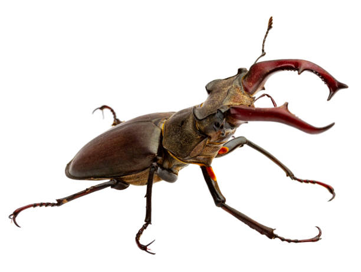
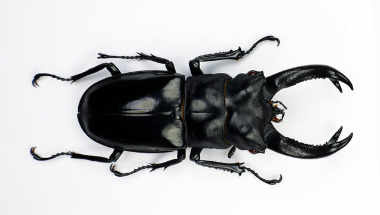
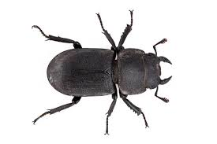

☀️
Stag beetles are among the most striking and recognizable insects in the world, best known for the large, antler-like mandibles found on males. These oversized jaws resemble the antlers of a stag, which is how the beetle gets its name. Male stag beetles use their mandibles mainly for wrestling rivals, lifting and pushing each other as they compete for mates. Although they look intimidating, stag beetles are generally harmless to humans and rarely bite unless handled roughly.
These beetles are most active during warm summer evenings and are often seen flying at dusk in woodland areas, parks, and gardens. Adult stag beetles feed on tree sap, fruit juices, and other sweet liquids, while their larvae play an important ecological role by feeding on decaying wood underground. The larval stage can last several years, during which the larvae help recycle dead wood and return nutrients to the soil.
Stag beetles are considered an important indicator species, as their presence often reflects a healthy environment with plenty of old trees and natural habitats. Unfortunately, habitat loss and the removal of dead wood have caused their populations to decline in some regions. Conservation efforts now focus on preserving woodland habitats and encouraging people to leave fallen logs and tree stumps in place. Through these efforts, stag beetles can continue to thrive and remain one of nature’s most impressive insects.


